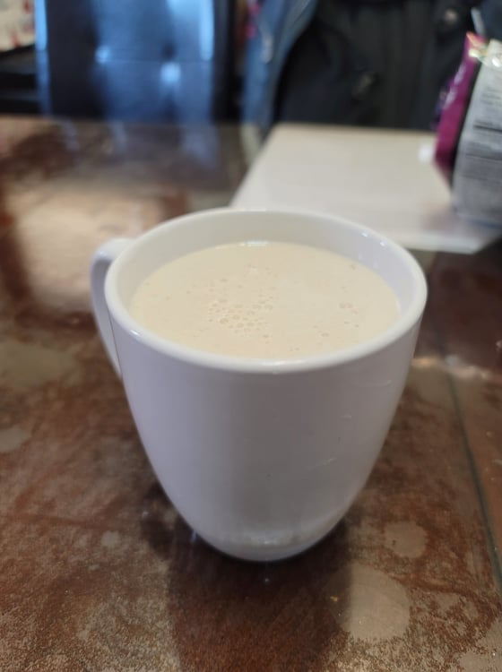

Eggnog

Ingredients:
- 2 1/2 cups Milk
- 4 sticks Cinnamon
- 1/8 tsp Ground cloves
- 1/2 tsp Vanilla extract
- 7 Egg yolks
- 3/4 cup White sugar
- 2 cups Heavy cream
- 2 tsp Vanilla extract
- 1/8 tsp Ground nutmeg
Instructions:
- In a small pot, add in the milk, cinnamon, cloves, and vanilla extract. Bring to right below boiling and then reduce to lowest heat setting. Let cook for 5 minutes.
- In a large bowl, whisk together the egg yolks and sugar until homogenous.
- Remove the cinnamon sticks from the milk and reserve. Ladle some of the hot milk and slowly whisk it into the eggs to temper the eggs. The slowly whisk the eggs into the rest of the milk. Whisk constantly for 3 minutes for the drink to thicken.
- Remove the drink to a pitcher or other drink container. Add back the cinnamon sticks and let cool to room temperature, about 1 hour.
- Stir in the heavy cream, vanilla extract, and nutmeg. Move to a fridge and let chill overnight.